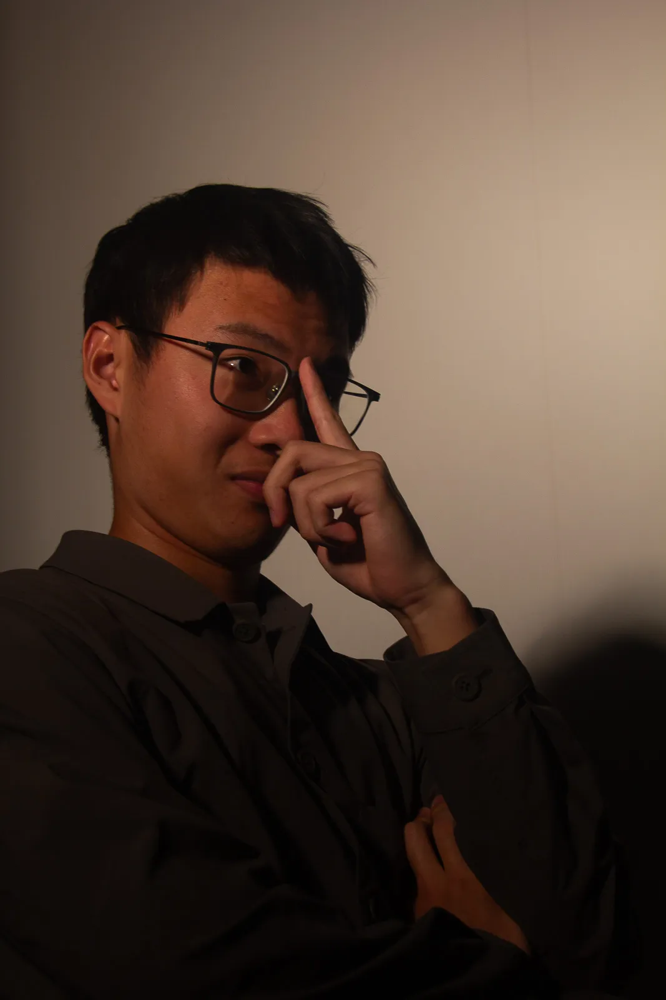
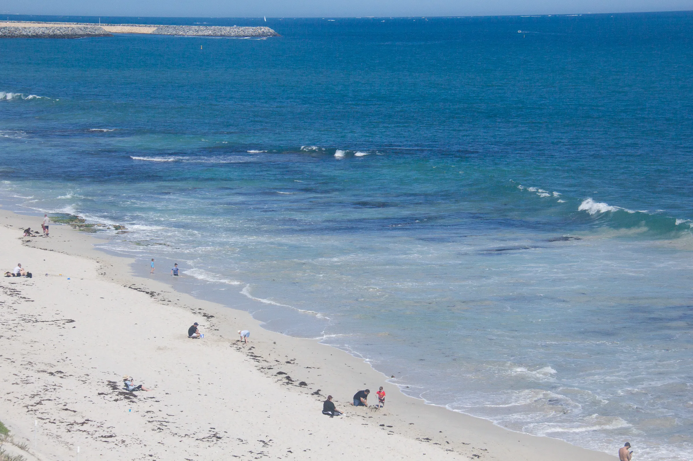
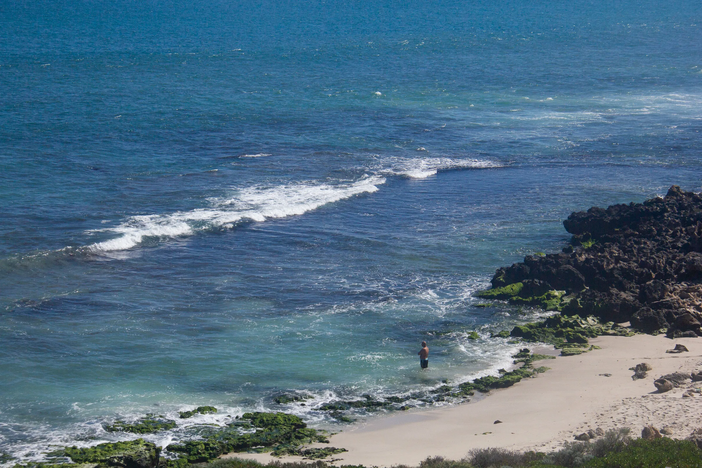

关于我

人类朋友，你好👋 我叫 Tony Wang，是一名汉语言文学专业的学生。目前在澳大利亚珀斯 ECU 进行交换。
专业：汉语言文学（待补充：年级/班级）。关注文本细读与历史叙事，也关注人在具体情境里的选择。交换经历让我把课堂的分辨带到现场，在珀斯的日子里，我在课堂、球场与路上记录差异。
语言：中文 / English（待补充：其他语言）。所在地：Perth, Western Australia · ECU Joondalup / Mount Lawley 校区。交换时间：2025—2026 学年（待补充：具体学期）。
更多信息：待补充。
兴趣

网球
喜欢网球，关注德约 Djokovic 的韧性与辛纳 Sinner 的干净利落。周末在珀斯的硬地球场练习发球与反手。战绩/俱乐部：待补充。
美剧 · Breaking Bad
喜欢看美剧《Breaking Bad》。着迷于人物在灰度里的选择，以及镜头如何用静默讲故事。其他喜欢的剧集：待补充。
游戏 · Red Dead Redemption 2
喜欢玩 Red Dead Redemption 2。喜欢在开放世界里骑马、写日记、看营地的火光，欣赏其对时间与细节的耐心。游戏时长/平台：待补充。
明史 · 大明王朝1566
明史爱好者，喜欢研究《大明王朝1566》，关注嘉靖朝的制度、奏疏与人心的拉锯。研究方向/论文：待补充。
以上为兴趣概览，作品/成果：待补充。
在珀斯 · 旅行

目前在澳大利亚珀斯 Edith Cowan University 进行交换。珀斯位于印度洋边，光线很直，天空很大。
日常在 Kings Park 步道、Fremantle 港口与校园的图书馆之间往返。喜欢旅行，认为旅行是另一种阅读——把自己放到陌生的日常里，练习观察。去过的地方：待补充。计划中的旅行：待补充。
校园生活：待补充。选课情况：待补充。更多现场影像见下方：
图片说明：Campus · 课间 / Coast · 印度洋边（原片直出，未摆拍）。
联系
人类朋友，你好 — 邮件是最稳妥的方式。我通常在 24 小时内回复。
电话：待补充
地址：待补充（Perth, AU）
微信：待补充
其他联系方式：待补充